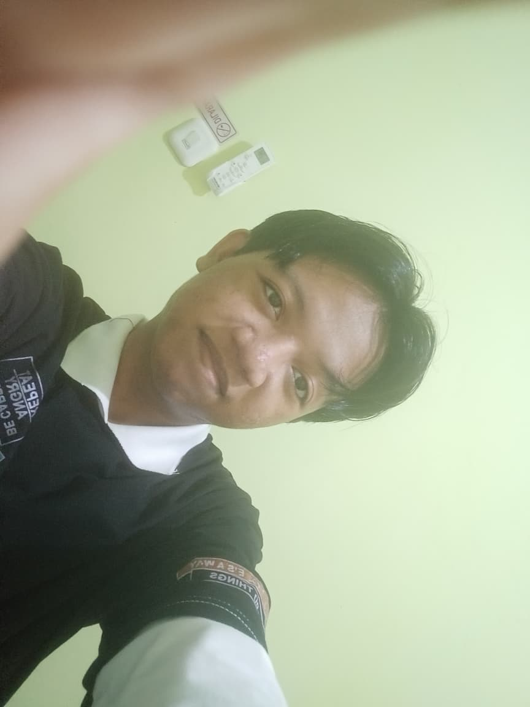
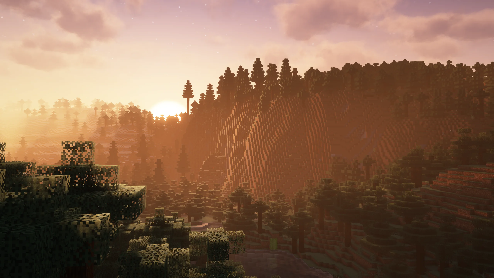
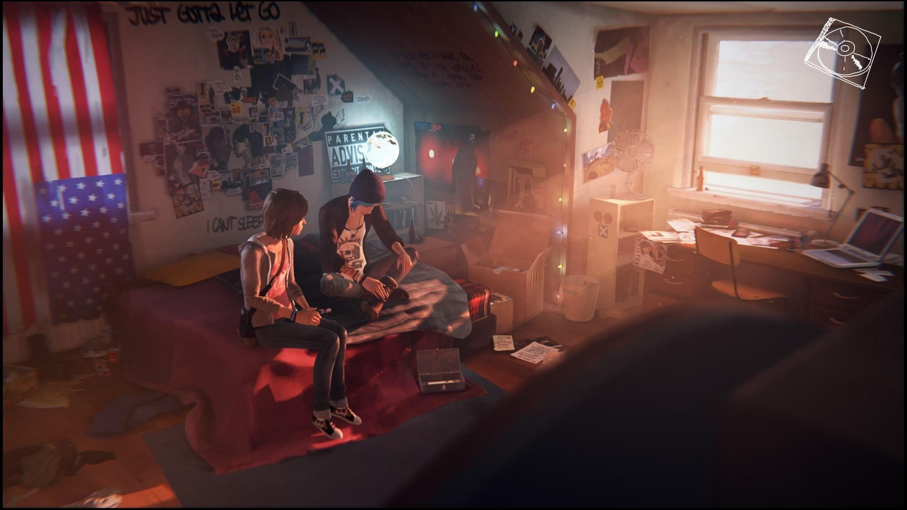
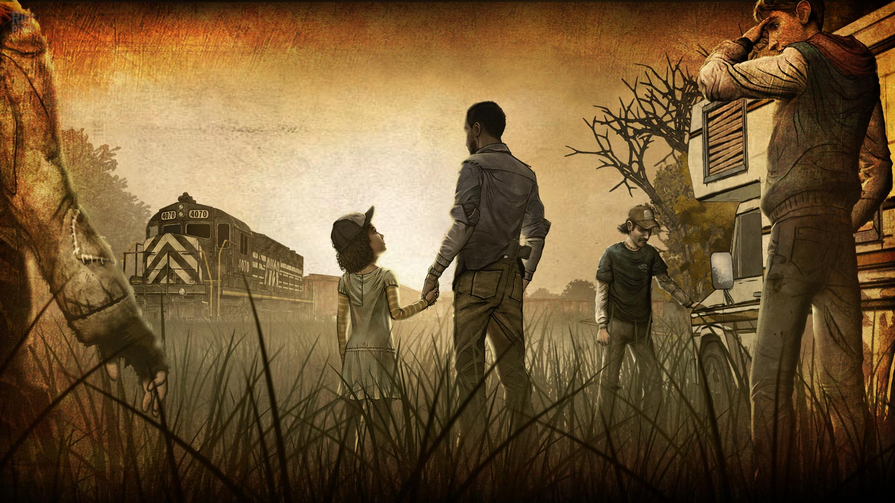
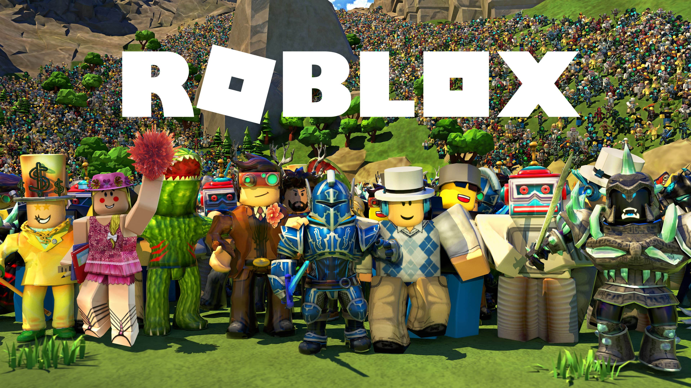
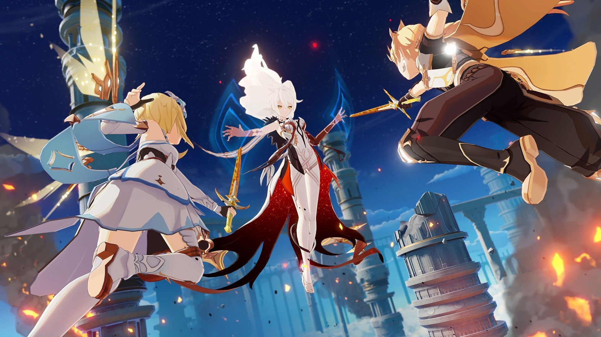
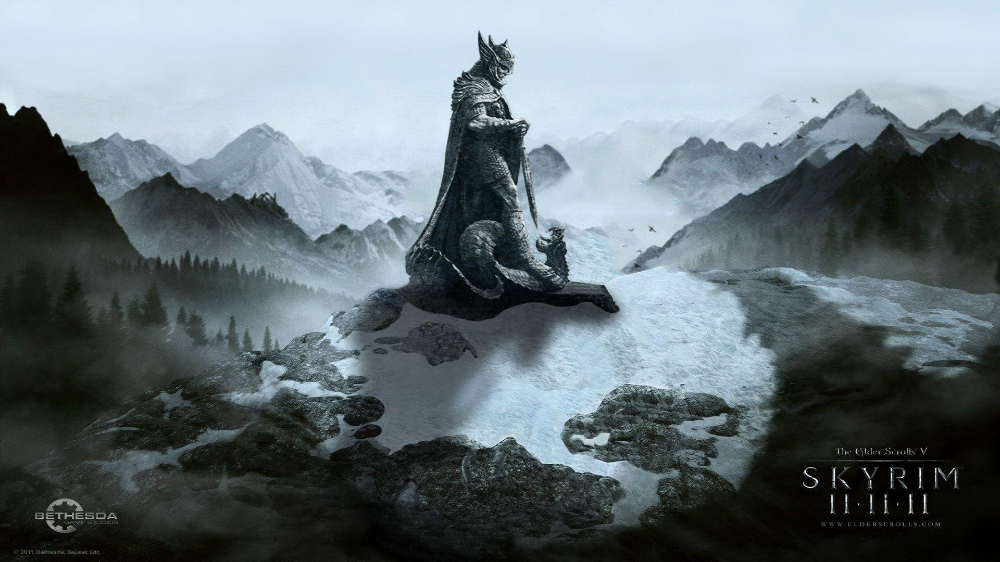
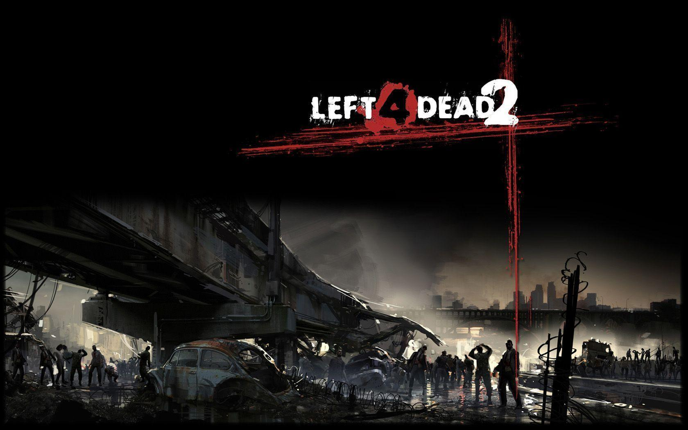
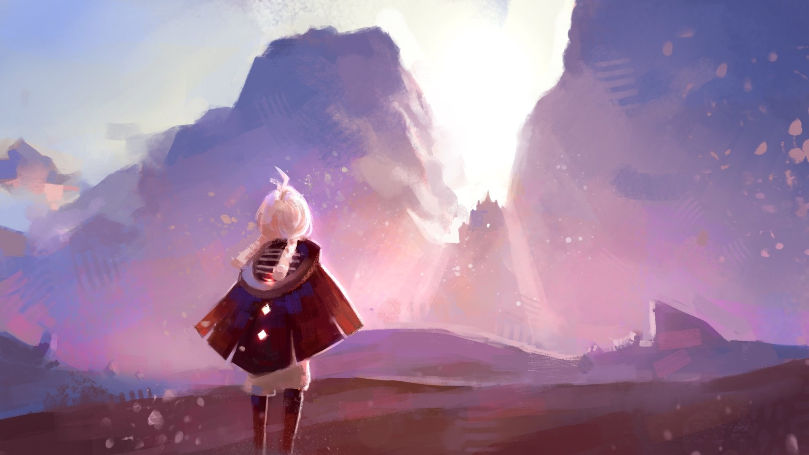

Haloo guys--!! Welcome to my first little website XD. Kenalin nama akuu Ahmad Hudalil Muttaqin atau biasa dipanggil Alil, Huda, Hudalil, terserah deh pokonya yang penting kalian nyaman :P. Aku adalah seorang mahasiswa semester 3 dengan program studi Sistem Informasi. Aku itu guys bisa dibilang agak introvert sih hehehe :> kalo sama orang baru itu canggung banget hahaha, tapi kalo sering ngobrol, ketemu, dan aman langsung tuh jiwa extreovert nya keluar wkwkwk XD jadi salam kenall yahh guys nice to meet yaa --!! :D
| Judul Game | Kategori | Alasan | Pictures |
| Minecraft | Sandbox | Ini jadi list paling pertama dari game ku karna apa? karna game ini itu jadi game pertama (dan sampai sekarang masih ku mainkan btw) yang betul betul membebaskan pemainnya untuk berkreasi, mau bikin apa aja bisa, mau bikin rumah, kota, bahkan dunia sekalipun bisa. Game ini juga bisa dimainkan secara multiplayer jadi bisa main bareng temen temen juga. Dan konten yang di sajikan oleh komunitas tidak kalah banyak nya yang menyediakan Mod, Shaders, Texture Pack, Add-on dsb. |  |
| Life is Strange | Choice-Based | Sebenarnya bingung sih antara mau masukkin Life Is Strange atau The Walking Dead duluan :v sama-sama bagus soalnya. Tapi akhirnya aku memilih Life Is Strange duluan di list gaming ini karna apa? Game ini lah yang jadi game Choice-based paling pertama ku (waktu itu main via hp doang wkwkw) buat kesalahan pilihan satu dan dua tapi it's okay. Game ini bercerita tentang main protagonist bernama Max Caulfield yang baru masuk ke dunia perkuliahan kembali ke kampung halamannya sebelum kemudian dia tidak sengaja mendapatkan kekuatan untuk megulang waktu. Aku jadi belajar banyak tentang betapa emosionalnya game ini dan pesan penting yang mau disampaikan gamenya :C. |  |
| The Walking Dead Game | Choice-Based | Nah masuk ke game ke tiga The Walking Dead. Game ini baru aku dapetin setahun atau dua tahun yang lalu sih (belum sempet dimainkan wkwkw :v) dan baru sempat ku mainkan baru baru ini, bisa dibilang game ini adalah salah satu masterpiece yang pernah aku mainkan sepanjang hidupku guys, game ini punya 4 season yang masing masing seasonnya punya 5-4 episode (season 4 cuma ada 4 episode karna company nya bangkrut btw) dan dalam cerita nya mengikuti sebuah main protagonist bernama Clementime di sebuah dunia Post-Apocalypse dimana zombie bermunculan ke dunia kita akan mengarahkan main protagonist kita dari dia masih kecil sampai dia remaja tua (umur 18 an) game ini bener bener bikin aku nangis parah sampe berhari hari guys :C karna dia gak segan segan untuk eliminasi karakternya untuk lore cerita yang kompleks dan pesan cerita yang disampaikan bisa dibilang sangat bagus sih, game ini underrated banget sih dan sayang banget kalo ga di coba :< |  |
| Roblox | Sandbox/Platform-Based | Not exactly a game sih ini, karna roblox itu adalah sebuah platform yang jadi wadah para kreator kreator kecil untuk membuat gamenya sendiri, aku sudah ada di roblox sejak 2020 karna dulu little old me penasaran banget sama yang namanya roblox wkwkwk. Seperti yang aku bilang tadi, di roblox ada banyak banget game-game yang dibuat oleh kreator seperti horror, action, simulator, brainrot(not reccomneded to play), survival dsb |  |
| Genshin Impact | Action RPG | Game ini adalah game yang paling peengen dulu aku mainkan, aku udah ga mainin game ini sekitar 2 tahun yang lalu sih wkwkwk (terkendala device soalnya ;( tapi kalo ada kesempatan bakal main lagi kok :D). Game ini bercerita tentang seorang traveler yang terpisah dengan saudaranya dan harus mencari saudaranya itu di dunia Teyvat, game ini punya banyak karakter yang bisa dimainkan dan masing masing karakter punya elemen nya sendiri sendiri, game ini juga punya cerita yang menarik dan grafis yang lumayan bagus sih menurutku. |  |
| The Elder Scroll V : Skyrim | Action RPG | Game ini adalah salah satu game yang udah lama aku mainkan, aku udah ga mainin game ini sekitar 1 tahun yang lalu sih wkwkwk (udah selesai story nya sih makanya ga main lagi wkwkwk). Game ini membebaskan pemainnya untuk memilih jalan cerita mereka sendiri bagaimana di dunia medieval, dan karna ini game udah dirilis dari jaman dulu jadinya banyak mod mod dari komunitas yang memperbagus game ini (literally gta versi jaman dulu wkwkw). |  |
| Left 4 Dead 2 | Action FPS | Game ini adalah game yang aku pertama kali beli di Steam, game ini cocoknya main multiplayer coop sih karna kita sebagai survivor di dunia post-apocalypse berusaha keluar dari map yang tersedia sementara zombie terus mengejar kita XD. Gak boleh diem di satu tempat dan selalu bikin deg-degan wkwkwk. |  |
| Sky: Children Of The Light | Adventure | Game ini adalah game yang aku mainkan di hp, game ini bercerita tentang seorang anak yang terbangun di dunia yang gelap dan harus mencari cahaya untuk mengembalikan dunia ke keadaan semula, game ini punya grafis yang bagus banget sih menurutku dan gameplay nya juga seru banget. |  |